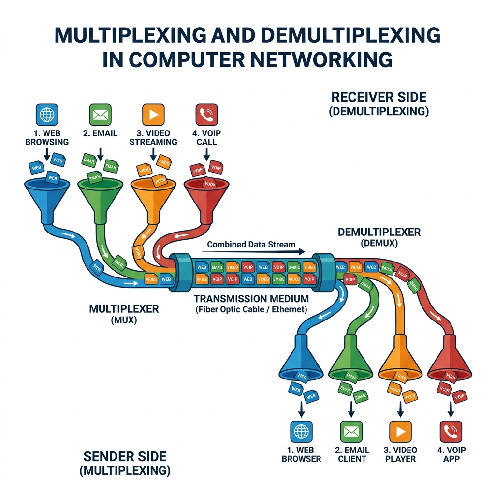
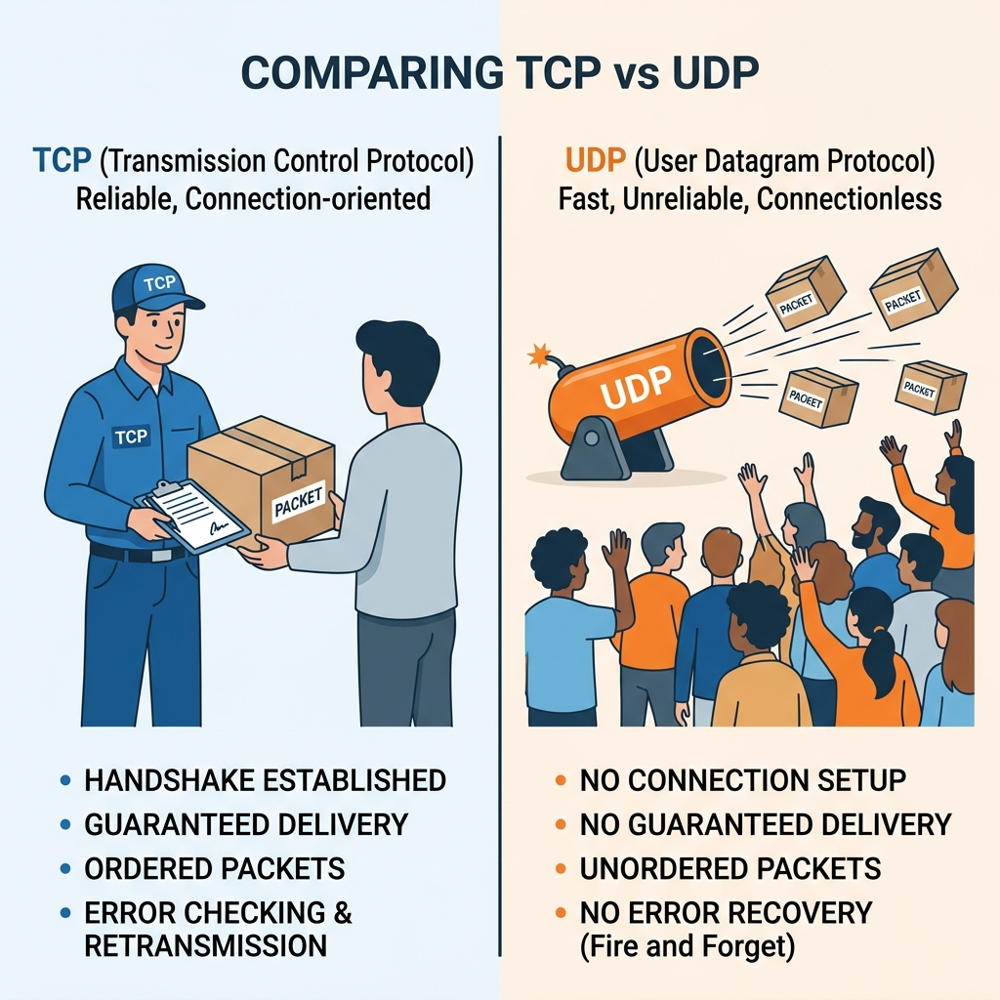
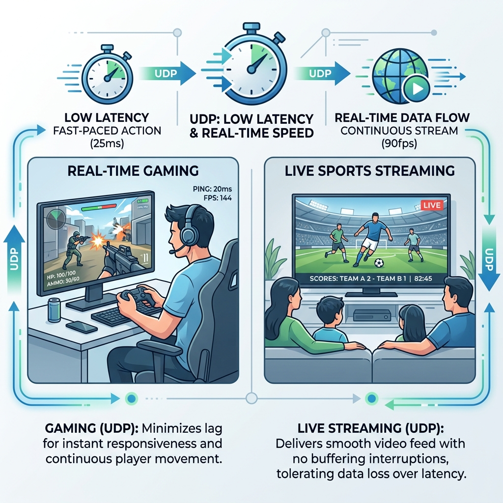

Referensi Utama: Kurose & Ross — Computer Networking: A Top-Down Approach (8th Ed)
Dosen Pengampu:
Bagian 1: Konsep Transport
Bagian 2: TCP & Congestion
Menyediakan komunikasi logis ujung-ke-ujung (end-to-end) antara proses aplikasi yang berjalan di host yang berbeda.

Connectionless Demux (UDP)
(Dest IP, Dest Port).
Connection-Oriented Demux (TCP)
(Src IP, Src Port, Dest IP, Dest Port).
UDP Demux
Satu pintu (soket) melayani semua tamu yang datang ke alamat tersebut.
TCP Demux
Setiap tamu (klien) dilayani di ruangan (soket) khusus yang berbeda, meskipun datang ke gedung (port) yang sama.

Meskipun tidak andal, UDP memiliki keunggulan telak dalam skenario tertentu:
Dalam aplikasi real-time, kecepatan lebih penting daripada keutuhan 100%.

Berbeda dengan saat membuka koneksi yang hanya butuh 3 langkah, menutup koneksi TCP butuh 4 langkah karena sifatnya yang asimetris.
Masalah: Bagaimana jika aplikasi di sisi penerima sangat lambat membaca data dari buffer TCP, sementara pengirim menembakkan data dengan sangat cepat?
Akibat: Buffer overflow di penerima (data hilang / tertolak).
Solusi TCP (Flow Control):
rwnd saat ini.Ilustrasi buffer di sisi penerima:
Definisi: Terlalu banyak sumber yang mengirim terlalu banyak data, terlalu cepat, sehingga jaringan (router di tengah jalan) tidak sanggup menanganinya.
Ciri-ciri Kemacetan Jaringan:
TCP melakukan kontrol kemacetan secara End-to-End. TCP tidak bisa bertanya ke router, jadi ia menebak kemacetan dari adanya packet loss.
Algoritma AIMD (Additive Increase, Multiplicative Decrease):
Dikerjakan analitik, ditulis tangan di kertas folio, difoto, dikirim ke e-learning.
1. Aplikasi video conference seperti Zoom dapat berjalan menggunakan TCP atau UDP. Mengapa pada kondisi jaringan yang ideal (loss rendah) aplikasi ini lebih memilih UDP dibandingkan TCP? Jelaskan dengan membandingkan mekanisme TCP RDT (Reliable Data Transfer) dan head-of-line blocking pada TCP.
2. Sebuah serangan SYN Flood Attack terjadi ketika penyerang mengirimkan ribuan paket TCP dengan bendera SYN=1, namun tidak pernah merespons dengan ACK terakhir (langkah ke-3). Jelaskan secara arsitektural (berdasarkan 3-Way Handshake) mengapa serangan ini dapat menyebabkan server lumpuh, dan memori apa yang dihabiskan oleh server!
3. Jelaskan perbedaan mendasar antara Flow Control dan Congestion Control pada TCP. Jika seorang pengguna mengunduh file besar dengan kecepatan 10 Mbps, lalu tiba-tiba kecepatannya turun menjadi 1 Mbps karena router di ISP kelebihan beban, mekanisme manakah yang sedang bekerja mengendalikan kecepatan pengguna tersebut?
Transport Layer & UDP
TCP
Pertemuan berikutnya: IP Addressing & Subnetting
Referensi mandiri: Kurose & Ross Chapter 3 (Transport Layer)